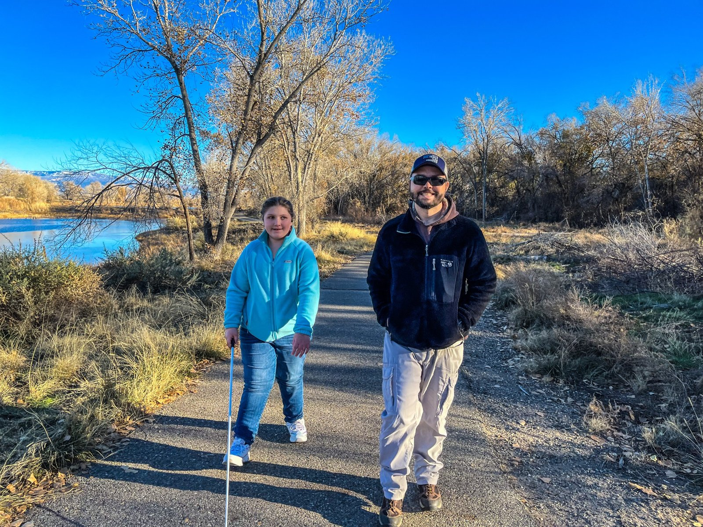
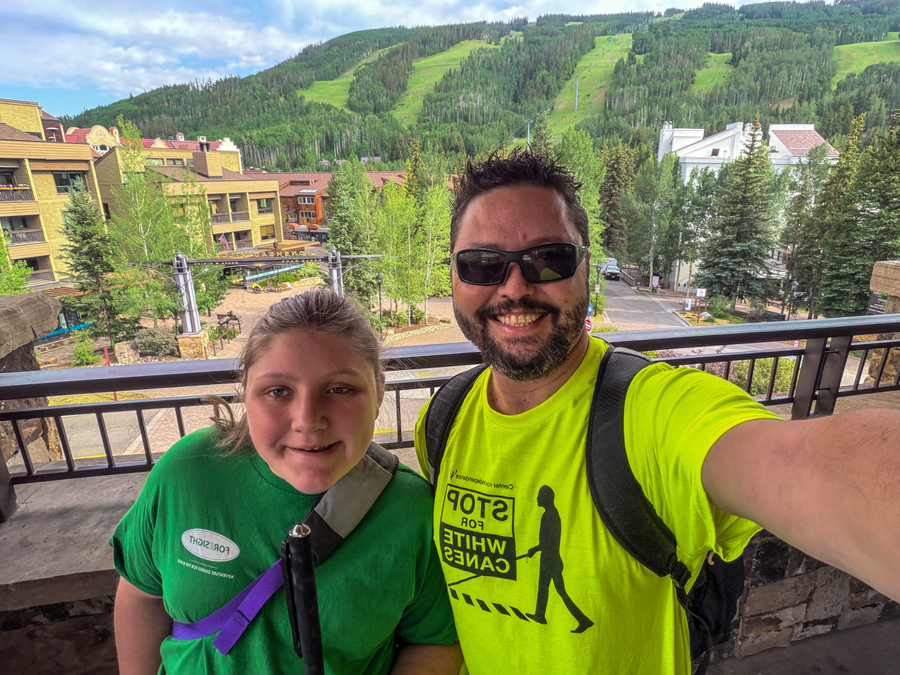
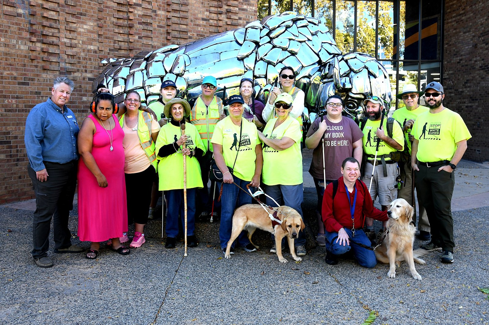
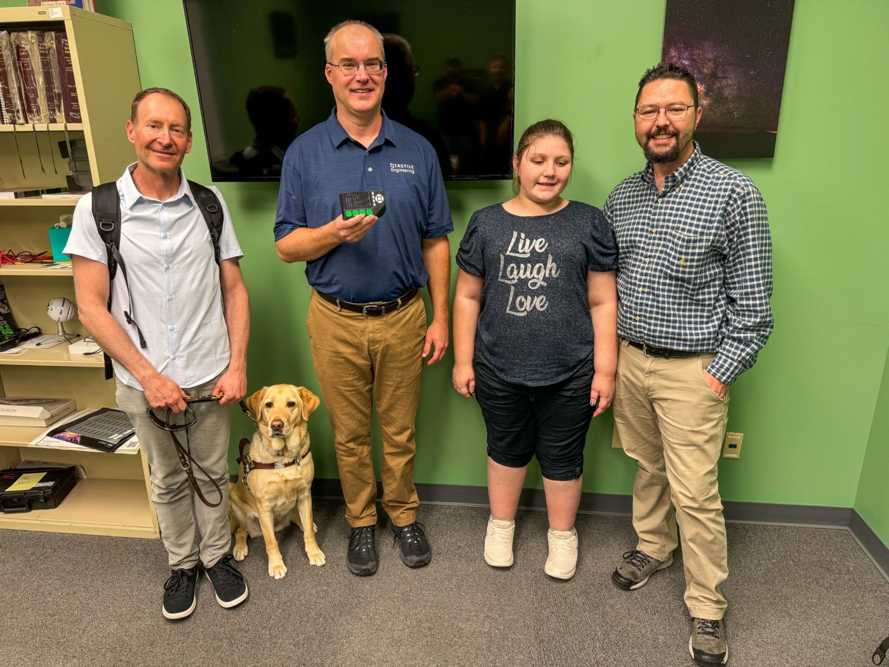

Blindness & literacy
Braille, assistive technology, orientation and mobility, the Expanded Core Curriculum, and the presumption of competence.
Washington, D.C. · Federal education advocacy
#AdvocateDad
From Western Colorado to the national table
Rob and Isabelle Harris are taking years of lived experience with blindness, special education, rural access, and transition directly to the people shaping national education policy.

“Braille is not dead.”
Rob Harris · U.S. Department of Education Office of Special Education Programs (OSEP) public remarks
Experience behind the mission
The mission
I did not set out to become an advocate. I became one because my daughter deserved access, opportunity, and a future shaped by her abilities—not by low expectations or inaccessible systems.
Today, I bring a parent’s persistence, a systems thinker’s eye, and years of lived experience to every table where decisions about disabled people are made.
— Rob Harris, father, caregiver & advocate

Featured story
How Project INSPIRE’s braille STEM resources helped Isabelle’s education, gave her father evidence when advocacy alone wasn’t enough, and became part of the story we’re carrying to Washington.
Read the StoryThe work
From one family’s fight for access to statewide and national systems change.

Braille, assistive technology, orientation and mobility, the Expanded Core Curriculum, and the presumption of competence.
Helping families navigate individualized education programs (IEPs) while pushing schools toward meaningful access, accountability, and ambitious outcomes.
Centering families in decisions about home- and community-based services, caregiver supports, assessments, and public accountability.
Creating room for blind and low-vision young people to build confidence, self-determination, interdependence, and their own public voice.
AdvocateDadCO’s continuing mission
These are AdvocateDadCO’s permanent systems-change priorities. They shape work in Colorado and nationally, but they are not three additional Congressional asks for this D.C. delegation.
Make timely Braille, accessible instructional materials, assistive technology, orientation and mobility (O&M), and Expanded Core Curriculum instruction an expectation—not an exception families must repeatedly fight to obtain.
Strengthen the pipeline of teachers of students with visual impairments (TVIs), certified orientation and mobility specialists (COMS), interveners, and related professionals, with specific solutions for rural communities where distance and shortages compound inequity.
Include disabled young people and families meaningfully in policy design, implementation, evaluation, and oversight—not only after decisions have already been made.
Washington, D.C. · Federal education advocacy
Rob and Isabelle are pairing a disciplined federal agenda with the truth of lived experience. Public updates will focus on the policy asks, not private travel, meeting, or participant details.
Washington, D.C. advocacy
Fall 2026
Rob connects federal infrastructure to family, rural, and implementation realities. Isabelle speaks as a blind young-adult self-advocate.
Why Isabelle’s voice matters
Isabelle is not going to Washington as a symbol. She is going as a young adult, a braille reader, an assistive-technology user, and a self-advocate whose experience should inform the decisions that shape her future.
“I would like to answer that myself.”

Stand with us
Share the public policy asks. Private travel and meeting details will stay private.
Connect with #AdvocateDad
For advocacy connections, collaboration, speaking, or media inquiries, reach out directly.
Email RobEmail: info@AdvocateDadCO.org
LinkedIn: Rob Harris
Substack: Rob #AdvocateDad (@advocatedad)